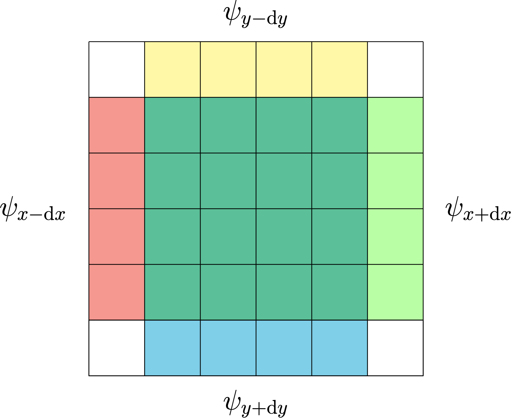

class: middle # Projet PRSA .footnote[E.Onal, S. Darnault, A. Marquis - ENSIIE - 2025] I. [Introduction au projet](index.html#) 1. Présentation du problème II. [Base de donnée](index.html#) 1. Structure de la base de donnée 2. Utilisation de la base de donnée 3. Exemple d'expérience III. [Field generator](index.html#) 1. Fichier d'entrée JSON 2. Différents potentiels implémentés IV. [Solveur](index.html#) 1. Préparation aux calculs 2. Implémentation des méthodes de résolution 3. Bindings python V. [Post Processor](index.html#) 1. Création des fichiers VTK VI. [Résultats](index.html#) 1. VII. [Expérience utilisateur](index.html#) 1. Préparation de l'environnement 2. Utilisation des modules --- class: middle # I - Introduction au projet - Présentation du problème .footnote[E.Onal, S. Darnault, A. Marquis - ENSIIE - 2025] ### Problématique Le projet consiste à réaliser un solveur d'équations de Schrödinger en 2D pour simuler le comportement d'une onde quantique dans un potentiel donné. Le projet doit implémenter les programmes FTCS, BTCS et CTCS. --- class: middle # II - Base de donnée - Structure de la base de donnée .footnote[E.Onal, S. Darnault, A. Marquis - ENSIIE - 2025] Nous avons une base de donnée "results" qui stoque nos expérences. Chaque collection correspond à une expérience dans la base de donnée. <iframe src="./images/database_finale.png" width="100%" height="470px"></iframe> --- class: middle # II - Base de donnée - Interaction avec la base de donnée .footnote[E.Onal, S. Darnault, A. Marquis - ENSIIE - 2025] ```python3 def AlreadyExist(collectionName): for elt in db.list_collection_names(): if elt == collectionName: return True return False def AlreadyExistHash(hashCode): for elt in db.list_collection_names(): exp = db[elt] for data in exp.find({"Init": True}): if data["Json_Hash"] == hashCode: return True return False def DeleteCollection(collectionName): try: if AlreadyExist(collectionName): db.drop_collection(collectionName) else: print(collectionName + " doesn't exist, cannot delete a non existing collection") except pymongo.errors.OperationFailure as e: print("ERROR: %s" % (e)) ``` --- class: middle # II - Base de donnée - Insertion dans la base de donnée .footnote[E.Onal, S. Darnault, A. Marquis - ENSIIE - 2025] ```python3 def CreateExperience(experienceName, jsonFile, jsonHash, potential): try: experience = db[experienceName] potentialDB = bson.binary.Binary(pickle.dumps(potential, protocol = 2)) data = { "Init": True, "Json_File": jsonFile, "Json_Hash": jsonHash, "Potential": potentialDB } experience.insert_one(data) except pymongo.errors.OperationFailure as e: print("ERROR: %s" % (e)) def InsertMatrix(experienceName, time, psiRe, psiIm): try: if AlreadyExist(experienceName): experience = db[experienceName] psiReDB = bson.binary.Binary(pickle.dumps(psiRe, protocol = 2)) psiImDB = bson.binary.Binary(pickle.dumps(psiIm, protocol = 2)) data = { "Init": False, "Time": time, "Psi_Real": psiReDB, "Psi_Imaginary": psiImDB } experience.insert_one(data) else: print(experienceName + " doesn't exist, create it before inserting data") except pymongo.errors.OperationFailure as e: print("ERROR: %s" % (e)) ``` --- class: middle # II - Base de donnée - Récupération dans la base de donnée .footnote[E.Onal, S. Darnault, A. Marquis - ENSIIE - 2025] ```python3 def GetPotential(experienceName): try: if AlreadyExist(experienceName): experience = db[experienceName] for data in experience.find({"Init": True}): matdata = data["Potential"] mat = pickle.loads(matdata) return mat else: print(experienceName + " doesn't exist, cannot get the potential of a non existing experience") except pymongo.errors.OperationFailure as e: print("ERROR: %s" % (e)) def GetJsonFile(experienceName): try: if AlreadyExist(experienceName): experience = db[experienceName] for data in experience.find({"Init": True}): filedata = data["Json_File"] return filedata else: print(experienceName + " doesn't exist, cannot get the Json file of a non existing experience") except pymongo.errors.OperationFailure as e: print("ERROR: %s" % (e)) ``` --- class: middle # II - Base de donnée - Récupération dans la base de donnée .footnote[E.Onal, S. Darnault, A. Marquis - ENSIIE - 2025] ```python3 def GetLastState(experienceName): try: if AlreadyExist(experienceName): experience = db[experienceName] lastTime = -1 for data in experience.find({"Init": False}): if data["Time"] > lastTime: lastTime = data["Time"] psiReData = data["Psi_Real"] psiRe = pickle.loads(psiReData) psiImData = data["Psi_Imaginary"] psiIm = pickle.loads(psiImData) return (lastTime, psiRe, psiIm) else: print(experienceName + " doesn't exist, cannot get the last state of a non existing experience") except pymongo.errors.OperationFailure as e: print("ERROR: %s" % (e)) def GetStates(experienceName): try: if AlreadyExist(experienceName): experience = db[experienceName] stateList = [] for data in experience.find({"Init": False}): time = data["Time"] psiReData = data["Psi_Real"] psiRe = pickle.loads(psiReData) psiImData = data["Psi_Imaginary"] psiIm = pickle.loads(psiImData) stateList.append((time, psiRe, psiIm)) return stateList else: print(experienceName + " doesn't exist, cannot get the list of states of a non existing experience") except pymongo.errors.OperationFailure as e: print("ERROR: %s" % (e)) ``` --- class: middle # II - Base de donnée - Exemple d'expérience .footnote[E.Onal, S. Darnault, A. Marquis - ENSIIE - 2025] ```python3 def test_pres(): DeleteCollection('Présentation') CreateExperience('Présentation', 'presentation.json', 'nosj.noitatneserp', np.eye(3)) InsertMatrix('Présentation', 0, np.eye(3), np.eye(3)) InsertMatrix('Présentation', 1, 2 * np.eye(3), 2 * np.eye(3)) InsertMatrix('Présentation', 2, 3 * np.eye(3), 3 * np.eye(3)) print(db.list_collection_names()) print(GetJsonFile('Présentation')) print(GetPotential('Présentation')) print(GetStates('Présentation')) ``` ```shell ['Présentation'] presentation.json [[1. 0. 0.] [0. 1. 0.] [0. 0. 1.]] [(0, array([[1., 0., 0.], [0., 1., 0.], [0., 0., 1.]]), array([[1., 0., 0.], [0., 1., 0.], [0., 0., 1.]])), (1, array([[2., 0., 0.], [0., 2., 0.], [0., 0., 2.]]), array([[2., 0., 0.], [0., 2., 0.], [0., 0., 2.]])), (2, array([[3., 0., 0.], [0., 3., 0.], [0., 0., 3.]]), array([[3., 0., 0.], [0., 3., 0.], [0., 0., 3.]]))] ``` --- class: middle # III - Field generator - Fichier d'entrée JSON .footnote[E.Onal, S. Darnault, A. Marquis - ENSIIE - 2025] L'utilisateur entre dans le fichier JSON les paramètres de l'expérience qu'il souhaite réaliser. #### Dans consts.json : ```json { "name": "experience_name", "constantes": { "n_x": 101, "n_y": 101, "x_min": -10, "x_max": 10, "y_min": -10, "y_max": 10, "h": 1, "m": 1, "w": 1, "k_x": 0, "k_y": 0 }, "user parameters": { "psi": { "type": 0, "nb": 1, "2DH0_nx": 2, "2DH0_ny": 0, "x0": 0, "y0": 0 }, "V": "Harmonic", "image_V": "", "method": "FTCS", "dt": "default", "t_max": 10 } } ``` --- class: middle # III - Field generator - Fonctionnement du main .footnote[E.Onal, S. Darnault, A. Marquis - ENSIIE - 2025] Fonctionnement global du field generator. #### Dans main.py ```python def main(): v = consts["paramètres utilisateurs"]["V"] # Calculate the potential according to the V value : Vmat = calcV() # Plot the potential plotV() # Calculate the wave function according to the psi value : psi0 = calcPsi() # Plot the wave function # Calculate the hash of the experiment # Send the data in the database if the experiment is not already done ``` --- class: middle # III - Field generator - Différents potentiels implémentés .footnote[E.Onal, S. Darnault, A. Marquis - ENSIIE - 2025] #### Dans main.py ```python # Initialize the potential grid Vmat = [[0 for i in range(n_x)] for j in range(n_y)] # Calculate the potential centered in (0, 0) at each point in the grid following this equation: # V = (x² + y²) / 9 def calcHarmV(): x = np.linspace(-10, 10, n_x) y = np.linspace(-10, 10, n_y) for i in range(n_x//2+1): for j in range(n_y//2+1): Vmat[i][j] = (x[i]**2 + y[j]**2) / 9 Vmat[i][n_y - j - 1] = Vmat[i][j] Vmat[n_x - i - 1][j] = Vmat[i][j] Vmat[n_x - i - 1][n_y - j - 1] = Vmat[i][j] return Vmat def calcV(v): match v: case 0: print("Not implemented yet, will use the image given in the consts.JSON file to create the potential") case 1: return Vmat case 2: return calcHarmV() case _: print("Not a valid value for v") ``` --- class: middle # III - Field generator - Différents Psi_0 calculés .footnote[E.Onal, S. Darnault, A. Marquis - ENSIIE - 2025] #### Dans main.py ```python def calcGaussPsi0Re(): A = np.sqrt(2 / np.pi * (w**2)) x = np.linspace(-10, 10, n_x) y = np.linspace(-10, 10, n_y) psi0Re = np.zeros((n_x, n_y)) for i in range(n_x): for j in range(n_y): psi0Re[i][j] = A * np.exp(- (x[i]**2 + y[j]**2) / (2 * w**2)) * np.cos(kx * x[i] + ky * y[j]) return psi0Re def calcGaussPsi0Im(): A = np.sqrt(2 / np.pi * (w**2)) x = np.linspace(-10, 10, n_x) y = np.linspace(-10, 10, n_y) psi0Im = np.zeros((n_x, n_y)) for i in range(n_x): for j in range(n_y): psi0Im[i][j] = A * np.exp(- (x[i]**2 + y[j]**2) / (2 * w**2)) * np.sin(kx * x[i] + ky * y[j]) return psi0Im ``` --- class: middle # IV - Solveur - Préparation au calcul .footnote[E.Onal, S. Darnault, A. Marquis - ENSIIE - 2025] ### Dans solver/src/main.py ```python # Read JSON file (exp_name, nx, ny, x_min, x_max, y_min, y_max, h, m, w, kx, ky, psi_type, psi_nb, psi_2DH0_nx, psi_2DH0_ny, x0, y0, V_id, image_V, method, t_max, dt) = js_uti.get_json(json_path) # Retrive data from de DB V = db.GetPotential(exp_name) info = TimeStepInfo() info.stepcounter = 0 info.t, psi_real, psi_imag = db.GetLastState(exp_name) # Converts Numpy matrixes so that they have the same pattern in memory as Armadillo matrixes psi_real = np.array(psi_real, dtype=np.float64, order="F") psi_imag = np.array(psi_imag, dtype=np.float64, order="F") V = np.array(V, dtype=np.float64, order="F") solver = solver.Solver(V, json_path) ``` #### Dans solver/include/TimeStepInfo.h ```cpp #ifndef TIMESTEPINFO_H #define TIMESTEPINFO_H struct TimeStepInfo { double t; int stepcounter; }; #endif ``` --- class: middle # IV - Solveur - Constructeur du solveur .footnote[E.Onal, S. Darnault, A. Marquis - ENSIIE - 2025] Le but est d'initialiser le maximum d'éléments avant de commencer le calcul. #### Dans solver/src/solver.cpp ```cpp Solver::Solver(mat V, const char *path) { Lecture du json ... dx = (x_max - x_min) / (nx - 1); dy = (y_max - y_min) / (ny - 1); V_inner = V.submat(1, 1, nx - 2, ny - 2); A = ((-1 / h_bar) * V_inner - ((h_bar / m) * (1 / dx * dx + 1 / dy * dy))); coef_x = h_bar / (2 * m * dx * dx); coef_y = h_bar / (2 * m * dy * dy); nx_1 = nx - 1; ny_1 = ny - 1; nx_2 = nx - 2; ny_2 = ny - 2; nx_3 = nx - 3; ny_3 = ny - 3; dt_2 = dt / 2; psi_real_next.zeros(nx, ny); psi_imag_next.zeros(nx, ny); } ``` --- class: middle # IV - Solveur - Méthode FCTS .footnote[E.Onal, S. Darnault, A. Marquis - ENSIIE - 2025] ### Dans solver/src/solver.cpp ```cpp void Solver::FTCS_derivation(mat &psi_real, mat &psi_imag, TimeStepInfo &info) { for (int i = 0; i < 1000; ++i) { // Update using FTCS psi_real_next.submat(1, 1, nx_2, ny_2) = psi_real.submat(1, 1, nx_2, ny_2) - dt * ( A % psi_imag.submat(1, 1, nx_2, ny_2) + coef_x * (psi_imag.submat(2, 1, nx_1, ny_2) + psi_imag.submat(0, 1, nx_3, ny_2)) + coef_y * (psi_imag.submat(1, 2, nx_2, ny_1) + psi_imag.submat(1, 0, nx_2, ny_3)) ); psi_imag_next.submat(1, 1, nx_2, ny_2) = psi_imag.submat(1, 1, nx_2, ny_2) + dt * ( A % psi_real.submat(1, 1, nx_2, ny_2) + coef_x * (psi_real.submat(2, 1, nx_1, ny_2) + psi_real.submat(0, 1, nx_3, ny_2)) + coef_y * (psi_real.submat(1, 2, nx_2, ny_1) + psi_real.submat(1, 0, nx_2, ny_3)) ); // Swap pointers instead of copying matrices std::swap(psi_real, psi_real_next); std::swap(psi_imag, psi_imag_next); // Update temporal informations info.stepcounter++; info.t += dt; } } ``` --- class: middle # IV - Solveur - Expliquation de l'implémentation .footnote[E.Onal, S. Darnault, A. Marquis - ENSIIE - 2025] - Utilisation de submat pour ne pas faire de copies et d'allocations inutiles - `swap` au lieu de faire une copie  <p style="font-size: 12px;">(Merci Lorenzo)</p> --- class: middle # IV - Solveur - Méthode BCTS .footnote[E.Onal, S. Darnault, A. Marquis - ENSIIE - 2025] ### Dans solver/src/solver.cpp ```cpp void Solver::BTCS_derivation(mat &psi_real, mat &psi_imag, TimeStepInfo &info) { for (int i = 0; i < 50; ++i) { // Initialize values for the iteration psi_real_next = psi_real; psi_imag_next = psi_imag; double max_diff = 1.0; // Initial value greater than epsilon int iter_count = 0; while (max_diff > epsilon && iter_count < max_iter) { // Save previous solutions to compute the difference psi_real_prev = psi_real_next; psi_imag_prev = psi_imag_next; // BTCS method ... // Compute the maximum difference to check for convergence diff_real = abs(psi_real_next - psi_real_prev); diff_imag = abs(psi_imag_next - psi_imag_prev); max_diff = std::max(diff_real.max(), diff_imag.max()); iter_count++; if (iter_count == max_iter) { cout << "MAX_ITER reached without convergence" << endl; } } // Update states ... } } ``` --- class: middle # IV - Solveur - Retour au python .footnote[E.Onal, S. Darnault, A. Marquis - ENSIIE - 2025] ### Dans solver/src/main.py ```python match method: case "FTCS": while info.t < t_max: # Call C++ function solver.FTCS_derivation(psi_real, psi_imag, info) norm = solver.Calc_norm(psi_real, psi_imag) #print("Norm:", norm) if norm > 3.0: print("Too high norm ( > 3), stopping simulation") break elif norm < 0.1: print("Too low norm ( < 0.1), stopping simulation") break # Write the files in the DB db.InsertMatrix(exp_name, info.t, psi_real, psi_imag) #print("File", info.stepcounter, "written in the database") ...other methods... ``` ### Dans solver/src/solver.cpp ```cpp double Solver::Calc_norm(arma::mat &psi_real, arma::mat &psi_imag) { double norm = 0.0; arma::cx_mat psi = arma::cx_mat(psi_real, psi_imag); norm = arma::accu(psi % arma::conj(psi) * dx * dy).real(); return norm; } ``` --- class: middle # IV - Solveur - Bindings python .footnote[E.Onal, S. Darnault, A. Marquis - ENSIIE - 2025] ### Dans solver/src/solver.i ```cpp %module solver %include "exception.i" ... %{ #define SWIG_FILE_WITH_INIT #include "../include/solver.h" #include "../include/TimeStepInfo.h" %} %include "armanpy.i" %include "../include/solver.h" %include "../include/TimeStepInfo.h" ``` ### Dans solver/src/solver.py ```python import numpy from setuptools import setup, Extension module1 = Extension('_solver', include_dirs = ['../include/armanpy/', numpy.get_include()], libraries = ['m', 'z', 'armadillo'], sources = ['solver.i', '../src/solver.cpp'], swig_opts = ["-c++", "-Wall", "-I.", "-I../include/armanpy/"]) setup( name='solver', version='1.0', ext_modules=[module1], install_requires=['numpy', 'matplotlib', 'swig', 'setuptools'], ) ``` --- class: middle # V - Post processor - Création des fichiers VTK .footnote[E.Onal, S. Darnault, A. Marquis - ENSIIE - 2025] On crée des **.vtr** pour pouvoir fixer les coordonnées sur les axes. ### Dans post_processor/main.py ```python def create_vtr_files(exp_name, state_list, x_min, x_max, y_min, y_max, nx, ny, output_dir="./vtr_files"): if not os.path.exists(output_dir): os.makedirs(output_dir) file_paths = [] for idx, state in enumerate(state_list): t, psi_re, psi_im = state # Probability density, reshaped to fit gridToVTK psi_squared = (psi_re**2 + psi_im**2).reshape((ny, nx, 1)) # Name of the file filename = f"{output_dir}/{exp_name}_{idx:04d}" # Export to VTR x = np.linspace(x_min, x_max, nx, dtype=np.float32) y = np.linspace(y_min, y_max, ny, dtype=np.float32) z = np.linspace(0.0, np.max(psi_squared), 1, dtype=np.float32) gridToVTK( filename, x, y, z, pointData={"density": psi_squared} ) file_paths.append(f"{filename}.vtr") #print(f"File generated: {filename}.vtr (t={t})") ``` --- class: middle # VI - Résultats - Fentes d'Young - FTCS .footnote[E.Onal, S. Darnault, A. Marquis - ENSIIE - 2025] <video width="100%" height="500px" controls="yes" preload="auto"> <source src="videos/young_F.webm" type="video/webm"> Votre navigateur ne supporte pas la lecture de vidéos HTML5. </video> --- class: middle # VI - Résultats - Fentes d'Young - BTCS .footnote[E.Onal, S. Darnault, A. Marquis - ENSIIE - 2025] <video width="100%" height="500px" controls="yes" preload="auto"> <source src="videos/young_B.webm" type="video/webm"> Votre navigateur ne supporte pas la lecture de vidéos HTML5. </video> --- class: middle # VI - Résultats - Fentes d'Young - CTCS .footnote[E.Onal, S. Darnault, A. Marquis - ENSIIE - 2025] <video width="100%" height="500px" controls="yes" preload="auto"> <source src="videos/young_C.webm" type="video/webm"> Votre navigateur ne supporte pas la lecture de vidéos HTML5. </video> --- class: middle # VI - Résultats - Mur de potentiel (effet tunel) - CTCS .footnote[E.Onal, S. Darnault, A. Marquis - ENSIIE - 2025] <video width="100%" height="500px" controls="yes" preload="auto"> <source src="videos/wall_C.webm" type="video/webm"> Votre navigateur ne supporte pas la lecture de vidéos HTML5. </video> --- class: middle # VI - Résultats - Oscillateur harmonique 2D - .footnote[E.Onal, S. Darnault, A. Marquis - ENSIIE - 2025] <video width="100%" height="500px" controls="yes" preload="auto"> <source src="videos/2D-H0_C.webm" type="video/webm"> Votre navigateur ne supporte pas la lecture de vidéos HTML5. </video> --- class: middle # VII - Expérience utilisateur - Initialisation de l'environnement .footnote[E.Onal, S. Darnault, A. Marquis - ENSIIE - 2025] Il y a différentes étapes à exécuter par l'utilisateur pour lancer le projet. - Télécharger MongoDB - Initialiser le projet - Lancer les ext_modules ### Initialisation dans Makefile ```Makefile init: venv bindings venv: @echo "=========== Creating a virtual environnement with useful modules ===========" @echo "..." @rm -rf psa_venv @python3 -m venv psa_venv && psa_venv/bin/pip install -r requirements.txt > /dev/null @echo "====================== Virtual environnement created =======================" @echo "" @echo "" bindings: @echo "========================== Creating C++ bindings ===========================" @echo "..." @make -s -C solver/src > /dev/null @echo ""============================ Bindings created =============================" @echo "" @echo "" ``` ### Dans solver/src/Makefile ```Makefile all: @rm -rf solver.py solver_wrap.cpp build psa_solver.egg-info @../../psa_venv/bin/pip install . ``` --- class: middle # VII - Expérience utilisateur - Utilisation des modules .footnote[E.Onal, S. Darnault, A. Marquis - ENSIIE - 2025] Il y a différentes règles qui permettent de lancer les modules indépendamment, ou toutes à la suite. ### Dans Makefile ```Makefile exp: @echo "=========================== Computing solutions ===========================" @make -s field_generator solver post_processor @echo "========================== Computation finished ============================" field_generator: @make -s -C field_generator/ solver: @make -s -C solver/ run post_processor: @make -s -C post_processor/ ``` Les fichiers vtk sont générés dans *post_processor/vtr_files* ```bash $ ls post_processor/vtr_files experience_name_0000.vtr experience_name_0002.vtr experience_name_0004.vtr experience_name_0006.vtr experience_name_0001.vtr experience_name_0003.vtr experience_name_0005.vtr ... ```